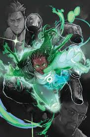

Personagens Secundários
Aliados
-
Nome do aliado
-
Nome do aliado
Adversários
-
Nome do adversário
-
Nome do adversário
Nem toda luz traz esperança — algumas revelam o horror do universo.

Diferente das versões clássicas, o Lanterna Verde neste universo não representa apenas força de vontade e heroísmo, mas sim um poder desconhecido e perigoso.
A energia que envolve seus portadores é instável, muitas vezes causando destruição e afetando diretamente a mente de quem a utiliza.
Uma entidade alienígena chega à Terra trazendo consigo uma energia cósmica desconhecida, ligada a uma misteriosa "lanterna".
Diferente do conceito tradicional, essa energia não é totalmente compreendida e parece agir de forma instável, quase como uma força viva.
Hal Jordan e Jo Mullein tornam-se os principais afetados por esse poder, sendo expostos diretamente à energia alienígena.
A partir desse momento, ambos passam a sofrer alterações físicas e psicológicas, lutando para entender — e sobreviver — ao que se tornaram.
Um dos primeiros a entrar em contato com a energia cósmica, Hal sofre mudanças intensas, tornando-se instável e imprevisível.
Diferente de Hal, Jo demonstra maior controle sobre a energia, mas ainda enfrenta os riscos e consequências desse poder desconhecido.
A energia que define este universo não é apenas uma ferramenta, mas uma força desconhecida, possivelmente consciente.
Diferente dos anéis tradicionais, ela não responde apenas à vontade — ela reage, influencia e, em alguns casos, consome seus portadores.
Nome do aliado
Nome do aliado
Nome do adversário
Nome do adversário